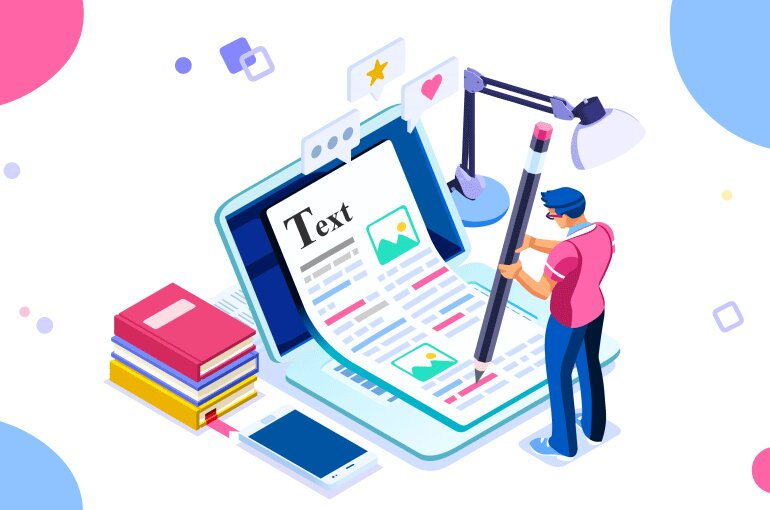
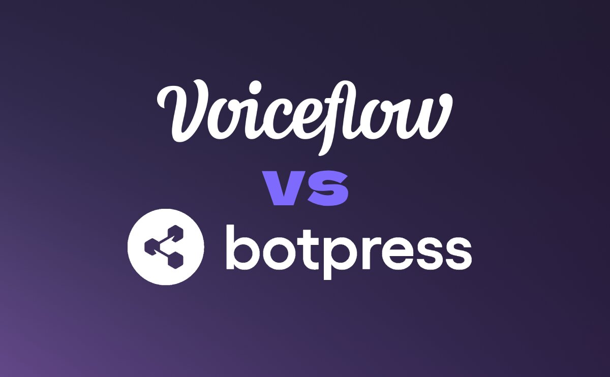
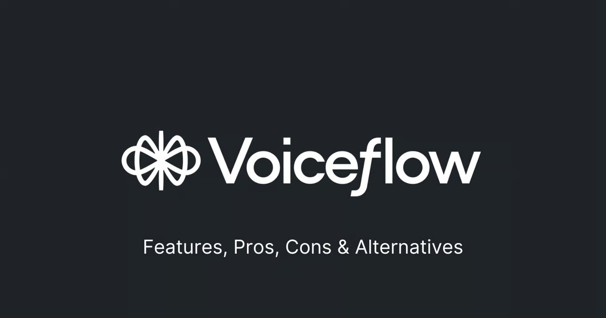

Phase de conception
J'ai débuté par une phase de recherche approfondie pour comprendre les attentes et les besoins du Docteur
Quinty. Cette étape comprenait la création d'un document contenant une série de questions destinées à cerner
précisément les fonctionnalités nécessaires pour le chatbot.
Exploration des Technologies
Initialement, j'ai envisagé de développer le chatbot en utilisant Python et Flask pour intégrer
des extensions WhatsApp, mais j'ai rencontré des obstacles techniques majeurs, notamment les restrictions
imposées par la politique de confidentialité de WhatsApp. Cela m'a conduit à explorer d'autres options
disponibles sur le marché.

Choix de la Plateforme de Développement
Après avoir visionné de nombreuses vidéos tutorielles sur
YouTube,
j'ai découvert Voiceflow et
Botpress 2 grandes plateforme de création de chatbot. Mon choix s'est porté sur Voiceflow en raison
de sa simplicité d'utilisation, sa documentation intuitive et sa
très grande communauté active sur discord
qui permet de faciliter grandement le développement du chatbot.

Mise en Œuvre avec Voiceflow
Voiceflow s'est révélé être un outil puissant pour la création rapide de prototypes et la mise en œuvre
efficace du chatbot. Grâce aux
tutoriels
disponibles, j'ai pu exploiter pleinement les fonctionnalités offertes par la plateforme, elle permet donc d'intégrer des
dialogues interactifs et des réponses automatisées qui reflètent les besoins spécifiques du cabinet du
Docteur Quinty.